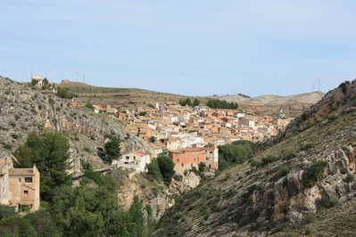

Almonacid de la Cuba
del 14 al 18 de Agosto Presione la pantalla para continuar
- Notas
- Esto esta aqui para posibles Notas
- Información de Contacto
-
Aplicación realizada por David Gimeno.
Contacto: david[at-@]almocuba.com - Nota: Si no puedes cambiar de página, prueba a ir al fondo de la página y pulsar sobre los iconos.